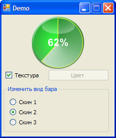

{kind=link}

Как сделать круглый ProgressBar
Опубликовано Декабрь 28, 2015 автором Памирыч
Как сделать круглый прогрессбар на основе секторов
Visual Basic .NET
|
Public Class PrBar Dim Fon As New Bitmap(My.Resources._1) Dim Glass As New Bitmap(My.Resources._2) Dim Mode1 As New Bitmap(My.Resources._3) Dim Mode2 As New Bitmap(My.Resources._4) Dim Mode3 As New Bitmap(My.Resources._5) Dim _Value As Integer = 0 Dim _Maximum As Integer = 100 Dim BColor As Color = Color.DarkGreen Dim _Skin As Bitmap Dim Sk As Skin Dim TxtrBr As TextureBrush Dim Texture As Boolean = False Dim Br As SolidBrush Dim sf As New System.Drawing.StringFormat Dim P As New Pen(Color.Yellow, 1)
Sub New() sf.Alignment = StringAlignment.Center sf.LineAlignment = StringAlignment.Center InitializeComponent()
Br = New SolidBrush(Color.DarkGreen) Draw() End Sub
Enum Skin Skin1 Skin2 Skin3 End Enum
Private Sub Draw() Dim BM As New Bitmap(104, 104) Dim G As Graphics = Graphics.FromImage(BM) G.TextRenderingHint = Drawing.Text.TextRenderingHint.AntiAlias G.SmoothingMode = Drawing2D.SmoothingMode.AntiAlias G.DrawImage(Fon, New Rectangle(0, 0, 103, 104)) If Texture = True Then G.FillPie(TxtrBr, New Rectangle(2, 2, 98, 98), 270, (360 * _Value \ _Maximum)) Else G.FillPie(Br, New Rectangle(2, 2, 98, 98), 270, (360 * _Value \ _Maximum)) End If G.DrawPie(P, New Rectangle(2, 2, 98, 98), 270, 360 * _Value \ _Maximum) G.DrawString(CInt(_Value / _Maximum * 100) & "%", New Font("arial", 15, FontStyle.Bold), Brushes.White, New Rectangle(0, 0, 104, 104), sf) G.DrawImage(Glass, New Rectangle(0, 0, 104, 104)) Me.BackgroundImage = BM End Sub
Property Valuev() As Integer Get Return _Value End Get Set(ByVal val As Integer) _Value = val Draw() End Set End Property
Property Maximum() As Integer Get Return _Maximum End Get Set(ByVal val As Integer) _Maximum = val End Set End Property
Property BckColor() As Color Get Return BColor End Get Set(ByVal val As Color) BColor = val Texture = False Br = New SolidBrush(BColor) Draw() End Set End Property
Property ProgSkin() As Skin Get Return Sk End Get Set(ByVal val As Skin) Sk = val Texture = True If Sk = Skin.Skin1 Then _Skin = Mode1 If Sk = Skin.Skin2 Then _Skin = Mode2 If Sk = Skin.Skin3 Then _Skin = Mode3 TxtrBr = New TextureBrush(_Skin) Draw() End Set End Property End Class |
С него толку мало, нужны ресурсы, так что проект прилагается.
Итак, свойства (их мало, самые основные):
Скин и цвет совместно не работают. Что установлено позже — то и применяется.
Размер бара не меняется. Не ставится основной цвет прогресса (фон).
Все накидано на одном дыхании.
В приложениях — проект бара и демонстрация его работы.